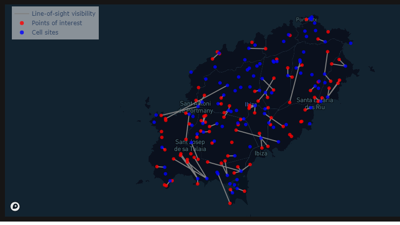

Input data
In order to use the tool, you need to provide it with your own data. Specifically, you will need to provide the tables described below.
Point of interest data
This table should include the following columns:
- poi_id: A unique identifier for each row/point of interest (POI)
- lat: the latitude for each point of interest in degrees (WGS84)
- lon: the longitude for each point of interest in degrees (WGS84)
Example:
| poi_id | lat | lon |
|---|---|---|
| 23dd6a45-3656-435b-b3b1-c16efab9daeb | 39.00777 | 1.561872 |
| e13a657c-edf0-4013-92db-6c70136e3ac9 | 38.90686 | 1.27542 |
| de75c87b-2676-47be-8454-4c44c4e6f644 | 38.99313 | 1.353725 |
| 4267fc81-0e9f-40ca-84c8-84529958dc22 | 39.00427 | 1.525952 |
| ae0ccc6e-5f91-4a58-a60b-68e8ebcdc797 | 38.95677 | 1.323312 |
Cell site data
This table should include the following columns:
- ict_id: A unique identifier for each row/cell site
- lat: the latitude for each cell site in degrees (WGS84)
- lon: the longitude for each cell site in degrees (WGS84)
- radio_type: the radio type for each cell site, either 3G, 4G, 5G or missing (NaN)
Example:
| ict_id | lat | lon | radio_type |
|---|---|---|---|
| 300a1494-68dc-4cb7-9825-1b8d98f07c6e | 39.00121 | 1.439019 | 3G |
| e47beab8-2b94-4a0f-ad9d-c434dde76a0c | 38.96746 | 1.228496 | 4G |
| ad9f5591-f2fd-4ec6-a35f-31c4fb8d7013 | 39.00755 | 1.541224 | 4G |
| 86818972-6723-46e5-9916-af01c2be5383 | 38.8705 | 1.384335 | 4G |
| 54f7a596-d5a1-4031-84c5-5d4b61b7cbca | 38.8573 | 1.384546 | 4G |
Visibility data
You also need to provide data on the visibility status between each point of interest and cell site. Each row in this table is a POI-cell site pair, where there is line-of-sight visibility between the two objects. The visibility table should include the following columns:
- ict_id: A unique identifier for each cell site
- poi_id: A unique identifier for each point of interest
- ground_distance: The ground distance between the cell site and point of interest
- order: ranking of each point of interest and cell site pair according to ground distance, in increasing order (1=closest cell site)
| poi_id | ict_id | ground_distance | order |
|---|---|---|---|
| 23dd6a45-3656-435b-b3b1-c16efab9daeb | f7412e93-8fb4-4abf-a298-8fb0876a97f5 | 1502 | 1 |
| 23dd6a45-3656-435b-b3b1-c16efab9daeb | ad9f5591-f2fd-4ec6-a35f-31c4fb8d7013 | 1784 | 2 |
| 23dd6a45-3656-435b-b3b1-c16efab9daeb | 4ea23bde-9f03-4e96-871d-59276323e1c2 | 2598 | 3 |
| e13a657c-edf0-4013-92db-6c70136e3ac9 | 8a4cfe6a-ce1a-4096-84dc-be09b32b8567 | 4814 | 1 |
| de75c87b-2676-47be-8454-4c44c4e6f644 | 9429f910-1d6b-4e52-8bb4-6f331d21e7ee | 646 | 1 |
| de75c87b-2676-47be-8454-4c44c4e6f644 | 82e53aaa-57c5-4437-898c-3c8d5c2e8336 | 1086 | 2 |
| de75c87b-2676-47be-8454-4c44c4e6f644 | 2fb90cc1-38d3-4aa7-951c-b9a823a63822 | 2346 | 3 |
Here below is an illustration of line-of-sight visibility between pairs of points of interest and cell sites.
